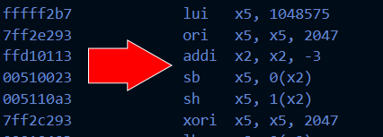

RISC-V emulator | RISC-V + C
What is Assembly Language?
In a previous article, I talked about what programming is and what programming languages are. This project uses the RISC-V (pronounced risk-five) assembly language, which is a bit different than a programming language.
Programming languages tell a computer what to do, while assembly languages tell a computer what to do as well as how to manipulate the hardware to do it. Since assembly languages are so closely tied to hardware this way, it is machine dependent. This means that an assembly program that works on one computer may not work on another. Most of us have AMD or Intel CPUs in our computers, not RISC-V CPUs. So, if I want my computer to be able to run RISC-V instructions, I need an emulator to do so.
How does the program work?
This program has 2 parts. The first part disassembles (i.e., translates) binary (or hexadecimal) values to RISC-V assembly language instructions and the second part emulates a RISC-V CPU for carrying out these instructions. This program was made as part of a course on computer architecture and organization.
The first half of this program (the disassembler) takes input in the form of a text file. This file should contain binary or hexadecimal values to be translated by the disassembler to RISC-V assembly instructions. Here is an example of a translation from hexadecimal values (left) to their corresponding RISC-V instructions (right).
Once the program receives the instructions to be carried out, the second half of the program (the emulator) will carry out these instructions exactly like a RISC-V CPU would. Programming also gives instructions to be executed, but unlike programming, assembly also tells the computer how to execute these instructions by specifying what values go into which memory components (called memory registers).
Assembly languages are tough to use and coding with higher level languages is far easier and more readable. However, assembly languages are needed for hardware manipulation even today, and can be extremely useful for “tiny” but highly impactful improvements to performance at the hardware level. Learning assembly also automatically lends itself to learning more about how computer hardware works, which is essential for computer engineering.